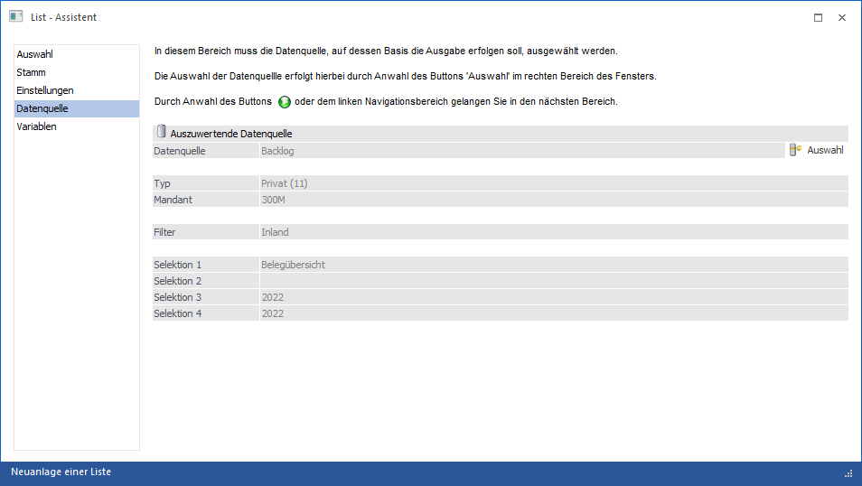
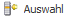

Wenn es sich bei der Liste um eine Datenquellenliste handelt (Listtyp "29 - Datenquellen") dann steht der Bereich "Datenquelle" zur Verfügung. Hier muss die Datenquelle (d.h. der Snapshot), welche in der Folge als Grundlage der Auswertung dient, angegeben werden.
Hinweis
Die Datenquellentypen "View" und "MasterView" werden an dieser Stelle nicht unterstützt.

Die folgenden Einstellungen können vorgenommen werden:
Ø

Datenquelle auswählenDurch Anwahl dieses Buttons kann die auszuwertende Datenquelle gewählt werden, wobei die Datenquellenverwaltung als Matchcode dient. In der Datenquellenverwaltung werden alle Datenquellen (auf welche der aktuelle Benutzer ein Zugriffrecht besitzt) angezeigt.
Ø Datenquelle
In den einzelnen Felder ("Datenquelle" bis "Selektion 4") werden die Informationen zu der ausgewählten Datenquelle angezeigt.
Hinweis
Alle im Bereich Variablen zur Verfügung stehenden Variablen sind abhängig von der Datenquelle. Dieses betrifft die Hauptfelder (d.h. die Felder der Datenquelle), sowie die zusätzlich zur Verfügung gestellten Stammdatenbereiche.
Achtung
Wird die Datenquelle verändert, so werden alle Variablen aus dem List-Aufbau entfernt. Auf dieses wird in Form einer Meldung hingewiesen und erst beim Bestätigen fortgefahren.